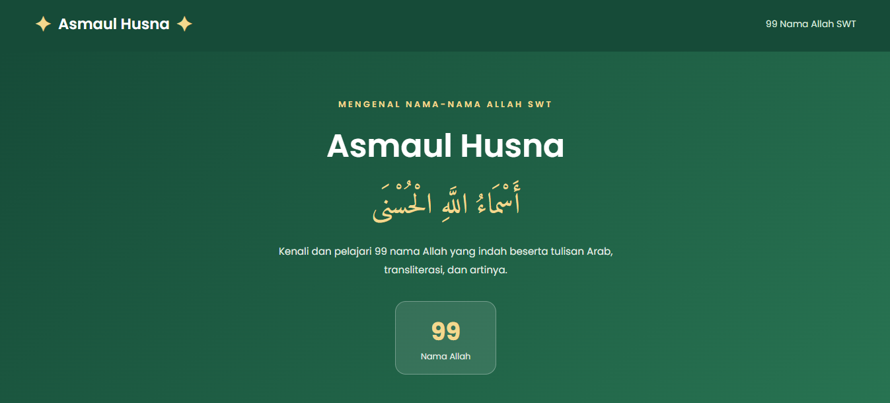
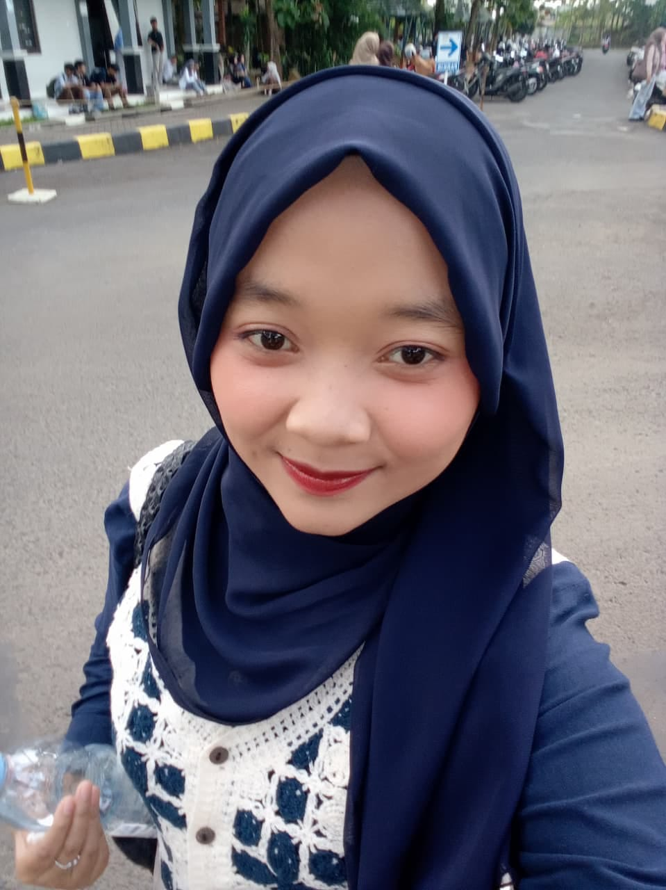
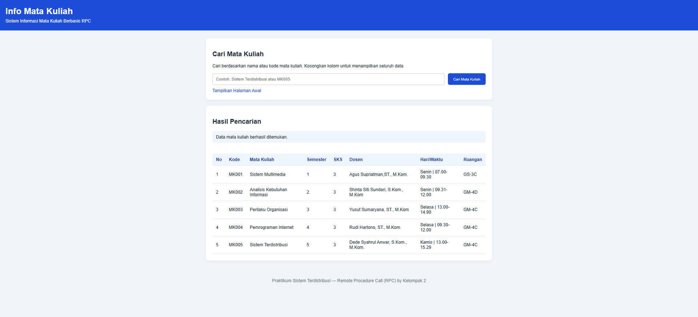
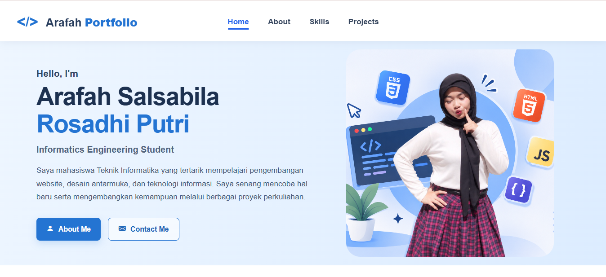

JavaScript • API
Aplikasi Asmaul Husna
Aplikasi web untuk menampilkan 99 Asmaul Husna, dilengkapi terjemahan dan fitur pencarian nama.
View Repository →Hello, I'm
Saya mahasiswa Teknik Informatika yang tertarik mempelajari pengembangan website, desain antarmuka, dan teknologi informasi. Saya senang mencoba hal baru serta mengembangkan kemampuan melalui berbagai proyek perkuliahan.
Get to know me
Saya Arafah Salsabila Rosadhi Putri, mahasiswa Program Studi Teknik Informatika di Universitas Perjuangan Tasikmalaya. Saya memiliki ketertarikan pada bidang teknologi informasi, khususnya pengembangan sistem dan website.
Selama perkuliahan, saya mempelajari dasar pemrograman, pengelolaan basis data, perancangan antarmuka, serta pengembangan aplikasi. Saya juga pernah mengikuti Praktik Kerja Lapangan di Cikara Studio Tasikmalaya dengan pengalaman membantu administrasi, input data, desain web sederhana, dan desain menggunakan Figma.

Informatics Engineering Student
Universitas Perjuangan TasikmalayaWhat I have learned
Beberapa teknologi dan tools yang pernah saya pelajari dan gunakan dalam kegiatan pembelajaran maupun proyek perkuliahan.
Things I have worked on
Berikut beberapa contoh proyek latihan dan tugas perkuliahan yang pernah saya kerjakan.

Aplikasi web untuk menampilkan 99 Asmaul Husna, dilengkapi terjemahan dan fitur pencarian nama.
View Repository →
Aplikasi untuk menampilkan informasi mata kuliah seperti hari, waktu, dan ruangan melalui komunikasi client-server.
View Repository →Aplikasi Point of Sale untuk mendukung proses pencatatan transaksi dan pengelolaan penjualan.
View Repository →
Website portofolio pribadi untuk memperkenalkan profil, menampilkan keterampilan, pengalaman, dan proyek yang telah dikerjakan.
View Repository →